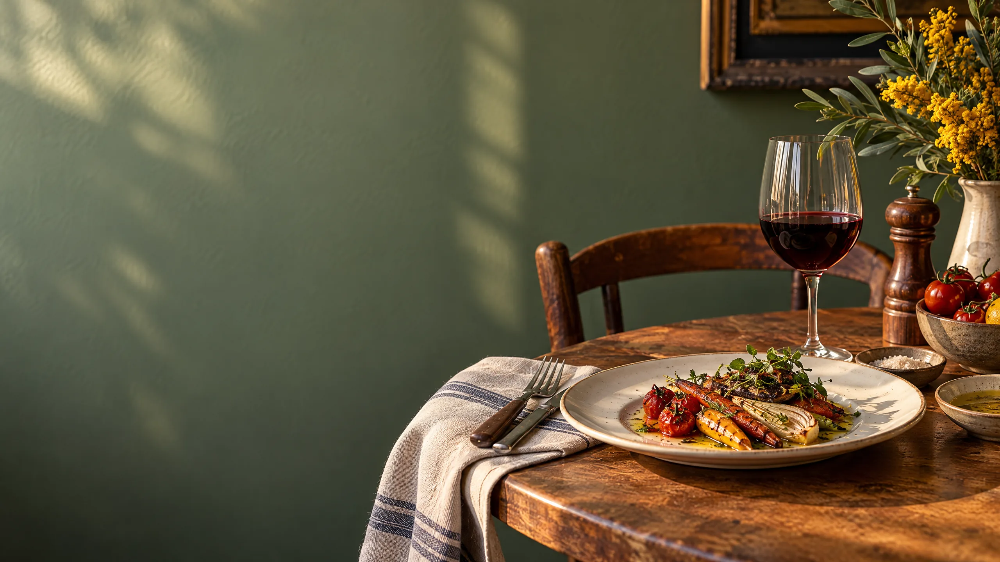
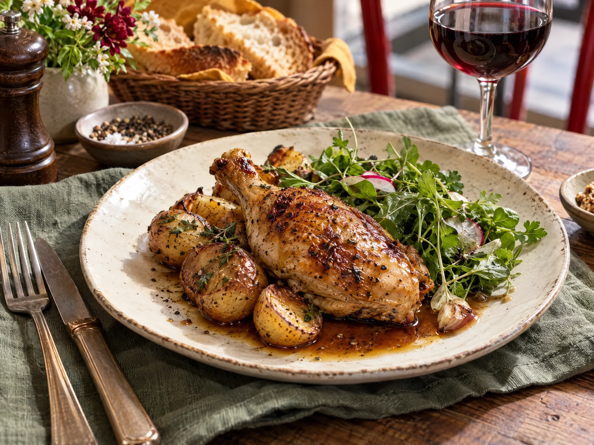
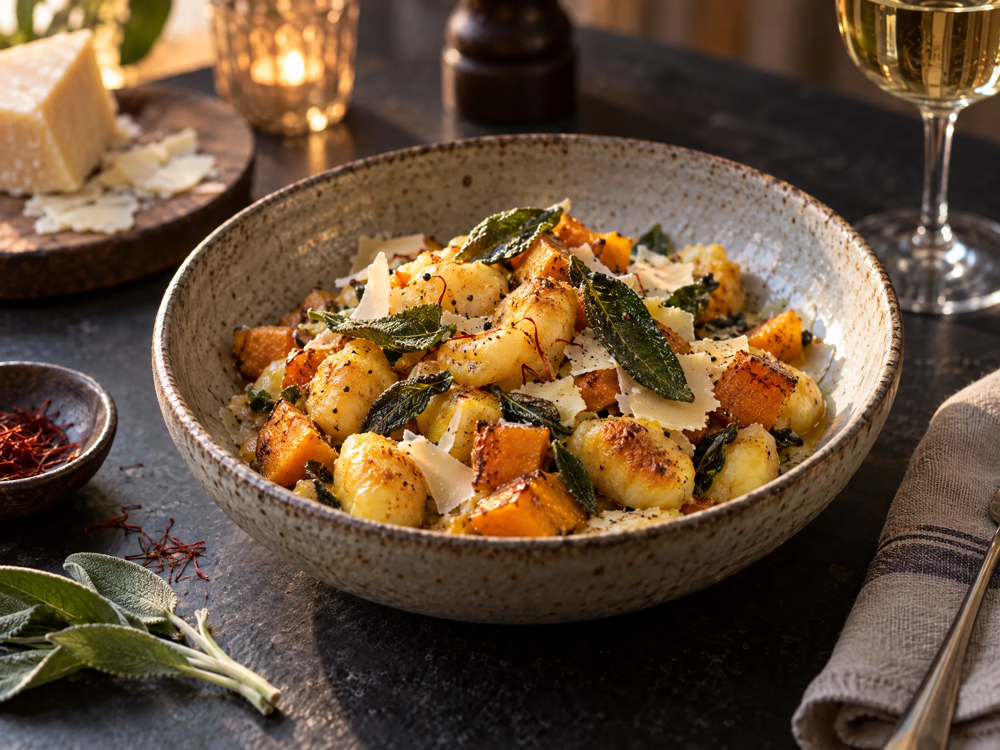
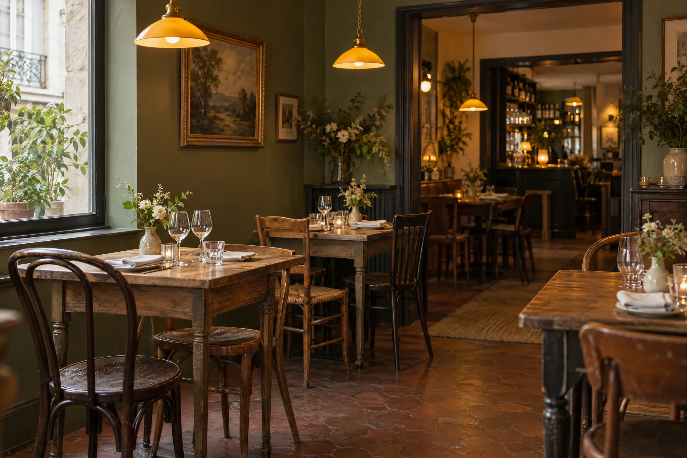

Œufs mimosa du marché
Pickles doux, ciboulette, pain grillé
Cuisine de quartier · Depuis [À REMPLACER : année]
Le Petit Bistro sert une cuisine simple et soignée, inspirée par les saisons et les grandes tablées. Un endroit pour déjeuner vite, dîner doucement ou refaire le monde autour d’un verre.

Dans l’assiette, on aime
La carte
Notre carte change avec les arrivages. Voici quelques incontournables de la maison, à retrouver selon l’inspiration du marché.
À emporter ou livré
Choisissez vos plats, indiquez votre créneau et envoyez-nous votre demande. Nous vous rappelons pour confirmer la disponibilité et le montant final.
Pickles doux, ciboulette, pain grillé
[XX €]Crème de noisette, chapelure aux herbes
[XX €]
Jus court, pommes grenailles, salade d’herbes
[XX €]
Courge, vieux comté, sauge croustillante
[XX €]Caramel au beurre salé, noisettes
[XX €]Chocolat noir, crème légère
[XX €]Ils en parlent
Cette section est prête à accueillir vos retours vérifiés. Remplacez les contenus de démonstration par des avis réellement collectés et autorisés.
[À REMPLACER : avis client vérifié sur l’accueil et la cuisine.]
[À REMPLACER : avis client vérifié sur l’ambiance du bistrot.]
[À REMPLACER : avis client vérifié sur le service ou le click and collect.]
Ne publiez un avis qu’avec l’accord de son auteur et indiquez sa source si nécessaire.

Depuis [année]Notre histoire
Le Petit Bistro est né d’une envie simple : ouvrir une porte sur une cuisine généreuse, sans chichi, où chaque détail compte. On y vient pour le plat du jour, on y reste pour l’accueil.
En salle, [À REMPLACER : prénom / équipe] vous reçoit avec le sourire. En cuisine, les produits du moment donnent le tempo.
Préparer ma venueVotre table vous attend
Pour les groupes de plus de [À REMPLACER : nombre] personnes, appelez-nous directement. Nous vous répondrons au plus vite pour confirmer votre demande.
Bon à savoir
Oui, selon les disponibilités. Appelez-nous au [À REMPLACER : téléphone] pour une réponse immédiate.
Notre carte comporte toujours une proposition végétarienne. Signalez vos contraintes dans le formulaire.
[À REMPLACER : informations d’accessibilité de l’établissement]
Écrivez-nous à [À REMPLACER : e-mail] avec la date et le nombre de convives.
Une question ?
Une demande de groupe, une question sur les allergènes ou un détail à préparer ? Laissez-nous un message. Les champs marqués d’un astérisque sont obligatoires.